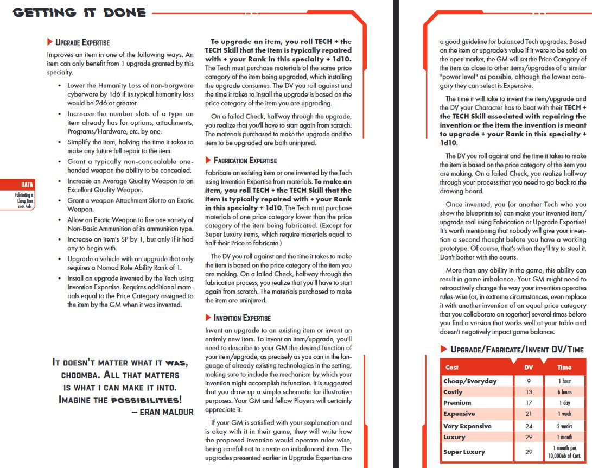

COMPLETE
CHOOSE YOUR ROLE
ROCKERBOY
If you live to rock, this is where you belong. As a Rockerboy, you're one of the street poets, the social conscience, and the rebels of the Time of the Red. With the advent of digital porta-studios and garage music master- ing, every Rockerboy with a message can take it to The Street, put it in the record stores, bounce it off the comsats. Sometimes, your message isn't something the Corporations or the government wants to hear. Sometimes what you say is going to get right in the faces of the powerful people who really want to run this world. But you don't care, because as a Rockerboy, you know it's your place to challenge authority, whether in straight-out protest songs that tell it like it is, playing kick-ass rock n' roll to get the people away from the TV sets and into The Streets, firing up the crowd with speeches, or composing fiery writings that shape the minds and hearts of millions. You have a proud history as a Rockerboy. Dylan, Springsteen, U2, NWA, the Who, Jett, the Stones—the legions of hard-rock heroes who told the truth with screaming guitars or gut-honest lyrics. You have the power to get the people up; to lead, inspire, and inform. Your message can give the timid courage, the weak strength, and the blind vision. Rockerboy legends like Johnny Silverhand, Rockerboy Manson (for whom the Role is named) and Kerry Eurodyne have led armies against Corporations and governments. Rockerboys have exposed corruption and brought down dictators. It's a lot of power for someone doing gigs every night in another city. But you can handle it. After all: you came to play!
CHARISMATIC IMPACT
The Rockerboy's Role Ability is Charismatic Impact. With this ability, they can influence others by sheer presence of personality. They need not be a musical performer; they can influence others through poetry, art, dance, or simply their physical presence. They could be a rocker—or a cult leader. As they grow in skill, they can affect larger and larger groups and call on their fans for greater and greater requests of loyalty

SOLO
You were reborn with a gun in your hand—the flesh and blood hand—not the metallic weapons factory that covers most of your other arm. Whether as a freelance guard and killer-for-hire, or as one of the Corporate cybersoldiers who enforce business deals and the Company's "black operations," you're one of the elite fighting machines of the Time of the Red. Most Solos put in military time during the 4th Corporate War, in a Corporate army, or in one of the government's current "police actions" around the country. As the battle damage piles up, you start to rely more and more upon tech: cyberlimbs for weapons and armor, bio-program chips to increase your reflexes and awareness, combat drugs to give you that edge over your opponents. When you're the best of the best, you might even leave the ranks of Corporate samurai and go ronin—freelanc- ing your lethal talents as a killer, bodyguard, or enforcer to whoever can pay your very high fees. Sounds good? There's a price—a heavy one. You've lost so much of your original meat body that you're almost a machine. Your killing reflexes are so jacked up that you have to restrain yourself from going berserk at any moment. Years of combat drugs taken to keep the edge have given you terrifying addictions. There are few people you can trust anymore. One night you might sleep in a penthouse condo in the City, the next in a filthy alley on The Street. But that's the price of being the best. And you're willing to pay it. Because you're a Solo.
COMBAT AWARENESS
The Solo's Role Ability is Combat Awareness. With Combat Awareness, a Solo can call up their training to have an enhanced situational awareness of the battlefield. When combat begins, anytime outside of combat, or in combat with an Action, a Solo may divide the total number of points they have in their Combat Awareness Role Ability among a number of combat abilities. If a Solo chooses to not change their point assignments, their previous ones persist. Activating some of these abilities will cost the Solo more points than others.
NETRUNNER
You're a brain-burning computer hacker & master of the Post-NET cyberverse in the Time of the Red. At three, your parents bought you an old Kirama LPD-12 cyberdeck with Zetatech 526 optical goggles (you were too young for interface plugs), and your life was changed. By fifth grade, you were already using REFRAME-G1s meta-programming to crack into the school district's system and change your grades. When you were thirteen, you shifted enough funds out of unprotected Trans United Bank accounts to finance your first neural interface plugs. You couldn't wait to run high and fast with the other gods of the NET—Bartmoss, Magnificent Curtis, and the rest. Then the 4th Corp War blew the Old NET apart. The R.A.B.I.D.S. made NET travel a suicide run; the Nodes were fragmented or cor- rupted. But there were still places to run. You just had to go there and jack in the hard way. You traded in sitting on the couch for a Bodyweight combat bodysuit and Virtuality 5 interface goggles to mesh NET with Meatspace. The systems you cracked were smaller, but even deadlier. Now, you're really part of a team, with Solos to cover your back, Medtechs to restart your heart if the ICE gets you, and Techs to help you hot-wire your cyber- deck for more speed and software deployment. Now, nothing can stop you. As an electronic wraith, you slip into the "hardest" mainframe systems with ease: stealing, trading, and selling their deepest secrets at will. The Black ICE may still kill you in the end, but until the ride runs out you'll be there, bare-brained and headfirst in the New NET.
INTERFACE
The Netrunner's Role Ability is Interface. Interface is what allows the Netrunner to Netrun—to interface with electronic mind-modems (called cyberdecks) to control computers, electronics, and associated program - ming. The Interface Role Ability also gives the Netrunner access to a wide suite of Abilities related to computer hacking and system control.

TECH
You can't leave anything alone—if it sits near you for more than five minutes, you've disassembled it and made it into something new. You've always got at least two screwdrivers and a wrench in your pockets. Computer down? No problem. Hydrogen burner out in your Metrocar? No problem. Can't get the video to run or your interface glitching? No problem. You make your living building, fixing, and modi- fying—a crucial occupation in a technological world recovering from a War that broke the back of the supply chain. You can make some good bucks fixing everyday stuff, but for the serious money you need to tackle the big jobs. Illegal weapons. Illegal or stolen cybertech. Corporate espionage and counter-espionage gear for "black operations." If you're any good, you're making a lot of money. And that money goes into new gadgets, hardware, and information. Your black market work isn't just making you friends—it's also racking you up an impressive number of enemies as well—so you invest a lot in defense systems and, if really pushed to the wall, call in a few markers on a Solo or two. You've fixed up tech for everybody from black ops Corporate samurai to Ms. Zepada down the block. No one's ever come back to you with a complaint but that might be because of the turrets guarding your front door. You're addicted to technology in all its forms and that's what makes you a Tech.
MAKER
The Tech's Role Ability is Maker. Using the Maker Role Ability, the Tech can fix, improve, modify, make, and invent new items. Whenever a Tech increases their Maker Rank by one, they gain one rank in two different Maker Specialties of their choice, including repairing, upgrading, fabricating, and inventing.
MEDTECH
You're an artist, and the human body is your canvas. You've got the best tools
the Time of the Red can offer, and you know how to use them. If you're lucky,
you got to attend one of the real med schools scattered around the wreck of the
Old United States. And after the War, military hospitals were everywhere and
the few doctors on the war front needed helping hands to hold down screaming
patients and splice cyberware back together. So, maybe you learned that
way.
And there's always an old ripperdoc or two out there who hearken
back to that old science fiction story called The Bladerunner—not
that old flatscreen vid, but the really old sci-fi book about renegade
doctors who performed illegal street surgery in one of the first dys-
topian novels. Maybe one of those guys trained you. Maybe that's
where you are right now, patching up the wounded, mending up
the sick, and keeping the locals alive. For love, commitment, or
maybe a just a fat payday on the side.
If you're really lucky, you've scored a berth in the local Trauma
Team franchise. Trauma Teams are groups of licensed paramedi-
cals who patrol the city looking for patients. You operate from an
AV-4 Urban Assault Vehicle, redesigned into an ambulance con-
figuration, and armed with a belly-mounted minigun. It's the best
of the best—Trauma Team charges some heavy subscription fees
to save its clients, and that translates into new medical toys, faster
AV ambulances, and hefty salaries for the best surgeons around.
It doesn't matter how you got here. What matters is that you're
here, on The Street, doing the job. And you'd be doing it no matter
what the reason. It's what marks you as a Medtech.
MEDICINE
The Medtech's Role Ability is Medicine. With this ability, Medtechs can keep people alive who should be dead with their knowledge, tools, and training. In the Time of the Red, they are as much doctors as they are mechanics, caring for people who are often more machine than human. Whenever the Medtech increases their Medicine Rank, they also choose one of three Medicine Specialties to allocate a single point to: surgery, pharmaceuticals, or cryosystems operation.

MEDIA
They're bending the truth out there. And you're going to stop
them. Someone has to do it. The Corporations used to rule the
world. They dumped toxics, destabilized economies, and com-
mitted murder with equal impunity. The government back then
couldn't even stop them—hell, they owned the government.
But then the War came.
The War stripped away the facade and let us all know exactly
what had been going on under our noses. And the people who made
sure we all knew the score were the Medias. That's you. You've
got a vidlink and a press pass, and you're not afraid to use them.
You're a city-wide figure, seen nightly all over the Data Pool in the
Time of the Red. It's not like the old days, when you had a major
Mediacorp behind you; this time, you've gotta depend on your
fans, your contacts, and your own reputation. But it's harder for
these new Corps to make you disappear. So when you dig down
for the dirt and slime the corrupt officials and Corporate lapdogs
try to cover up, you can dig deep. The next morning, you can put
the details of their crimes all over the screamsheets and vidscreens.
Three or four times, the bad guys have tried to kill you—that's why
your backup's a crack Solo bodyguard and you've got one of the
top ‘Runners in the business digging through NET Architectures to
back your stories. You have to be good, or else.
Your ‘Runner's just phoned in with a hot lead. You grab your gear
and flag your backup. You're going to break those bastards. This time,
for sure.
CREDIBILITY
The Media's Role Ability is Credibility. The Media can not only convince an audience of the truth of what they publish but also has a larger audience the more credible they are. Medias also have greater levels of access to sources and information; they are always in the know with their ears to the ground to pick up on rumors and information passively.

EXEC
In the old days before the Time of the Red, you would have been a hard-
driven, fast-track MBA on their way up the Corporate ladder. Sure, it was
selling your soul to the Company, but face it: the Corporations ruled the
world. They controlled governments, markets, nations, armies—you name
it. And you knew that whoever controlled the Corporations controlled
everything else. But things changed when the largest Megacorps
on the planet got into a major war that was equal to anything any
real national governments could have thrown down.
Okay, so right now your life as a junior executive is any-
thing but easy. There are those underneath you who'd kill
for a shot at your job. Literally. There are those over you
who'd kill to keep you out of their jobs. Literally. And they're
not kidding about the killing—every up-and-comer in the
Corporation has their own Team of Solos and Netrunners
to cover important pet projects. Last week, you led a mixed
team of Solos, Netrunners, and Techs on a headhunting run to
"extract" a researcher from a rival company. You told yourself
you joined the Corporation to make it a better place—work
from the inside, you said. Or just until you could start your
own Corporation that would be...a little more honest. But now
you're not so sure. Your ideals are a little tarnished and things
are getting pretty bleak. But you can't worry about ethics
now. You've got a report due in an hour, and it looks like that
guy in sales is planning to ice your database for good.
You're gonna ice him first.
TEAMWORK
The Exec's Role Ability is Teamwork. Just like a real corporate executive, the Exec builds a team whose members help them accomplish their goals, whether legal or not, morale permit- ting. Team members have a visible job description (like secre- tary or driver) but also have a covert roles (such as Netrunner, bodyguard, or assassin). Plus they get free housing and nice set of clothes!


LAWMAN
In the old days before the War, they only used to shoot at cops. Now you're lucky
if you just take a slug. The Street is mean these days, filled with new drugs, new
gangs, and new weapons that make a Minami-10 look like a kid's toy. But even so,
you're out there doing what you can to Protect—and Serve.
There used to be a big City Force, but most of the Old Guard in NCPD have been
thrown out on their own to keep what peace they can. The ones who remain still
take the Badge seriously; they work to keep people safe and make some kind of
stand against chaos. Even if you'd rather just walk a beat, if you're a professional
Lawman of any stripe, you're stuck carrying at least four high-caliber weapons,
most of them full-auto types, wearing a Kevlar ® vest that'll stop 850ft/lbs.
per square inch—and often you're still outgunned and outflanked. Half the
gangs were cybered up to begin with: super speed, super reflexes, could
see in the dark, carried weapons in their arms...and that was before the
War and the Fall of the Towers pumped a metric ton of milspec cybertech
into the Night Markets. The other half of the guys on The Street are free-
lance Corporate mercs who used to have jobs during the War; hired
to enforce Corp armies disbanded by the New United States' goon
squads. Now they're the goon squads and you're trying to keep
them under control too. Used to be the Corporate Cops had heavy
weapons, full combat armor, Trauma Team backup, AV-4 assault
vehicles, and gyrocopters with miniguns. But the nice, clean sectors
full of new office buildings and fancy restaurants—where no jacked-up
psychopunk is going to ever go on a killing spree with an FN-RAL37—are
mostly gone. Now you've got mostly burned-out buildings and abandoned
cars, where every night is a new firefight and another great opportunity for
a messy death. Or you might draw a Psycho Squad berth and get the job
of hunting down heavily armed and armored cyborgs who've flipped out. A
cyberpsycho can walk through machine gun fire and not even feel it, so a lot of
the Psycho Squad become a bit crazy themselves; they load up with boosted
reflexes, get some monstrously huge guns, and go hunt the cyborgs solo. But
you're not that crazy. Yet.
BACKUP
The Lawman's Role Ability is Backup. With this ability, Lawmen can call upon the help of a group of fellow officers, based on the Lawman's Rank and the conditions under which they make the call. This Backup is armed and armored based on their Rank.
FIXER
You realized fast that you weren't ever going to get a Corporate job or be tough enough to be a Solo. But you always knew you had a knack for figuring out what other people wanted, and how to get it for them. For a price, of course. Now your deals have moved past the nickel-and-dime stuff into the big time. Maybe you move illegal weapons over the border. Or steal and resell medical supplies. Perhaps you're a skill broker acting as an agent for high-priced Solos and 'Runners, or even hiring a whole Nomad pack to back a client's contracts. You buy and sell favors like an old-style Mafia godfather. You have connections into all kinds of businesses, deals, and political groups. You use your contacts and allies as part of a vast web of intrigue and coercion. If there's a hot nightclub in the City, you've bought into it. If there are military-class weapons on The Street, you smuggled ‘em in. If there's a faction war going down, you're negotiating between sides with an eye on the main chance. But you're not entirely in it for the bucks. If someone needs to get the heat off, you'll hide them. You get people housing when there isn't any, and you bring in food when the streets are blockaded. Maybe you do it because you know they'll owe you later, but you're not sure. You're one part Robin Hood and two parts AI Capone. In the past, they would have called you a crime lord. But this is the fragmented, nasty, deadly Time of the Red. So now they call you a Fixer.
OPERATOR
The Fixer's Role Ability is Operator. Fixers know how to get things on the black market and are adept at navigating the complex social customs of The Street, where hundreds of cultures and economic levels collide. Fixers maintain vast webs of contacts and clients who they can reach out to source goods, favors, or information. Fixers can also source desirable resources and make favorable deals.


NOMAD
Years ago, the Corps drove your family off the farm. They rolled in, took over the land, and put rent-a-cops all over the place. But that was before the War. You were loners, homeless, until you created a Nomad Pack of nearly two-hundred members. Back then, your Pack was crammed into a huge, ragtag fleet of cars, vans, buses, and RVs roaming the freeways looking for supplies, odd jobs, and spare parts in a fragmented world. The Pack was your home—it had teachers, Medtechs, leaders, and mechanics—a virtual town on wheels in which everyone was related by marriage or kinship. But in the Time of the Red, your Nomad Pack has evolved. Your knowledge of roadcraft—of how to get between the safezones over the savage highways has allowed you to become the masters of getting people, supplies, and materials to a world that desperately needs them. Your cousins on the open seas have taken over the huge container ships and turned them into the Nomad convoys keeping civilization running. Your Deltajock fam- boys keep the supply lines to the Orbital Highriders open. If it has to get somewhere and get there safely, Nomads get the job done. Your vehicles are well-armored and bristling with stolen weapons: miniguns, rocket launchers, and the like. Every kid knows how to use a rifle, and everyone packs a knife. Like modern-day cowboys, you ride the hard trail. You've got a gun, a bike, and your Family, and that's all you need. You're a Nomad.
MOTO
The Nomad's Role Ability is Moto. Whenever a Nomad increases their Rank in Moto, they have the option of adding another stock vehicle (with minimum specs) of their Moto Rank or lower to the pool of Family vehicles they have permission to use from the Family Motorpool or to make an upgrade to one of their current vehicles. Thanks to being around vehicles since birth, Nomads are also able to drive any type of vehicle with tremendous skill.
BUY YOUR STATS
Points: 42/62
| ABILITY | RANK | ||
|---|---|---|---|
| INT | 2 | ||
| REF | 2 | ||
| DEX | 2 | ||
| TECH | 2 | ||
| COOL | 2 | ||
| WILL | 2 | ||
| LUCK | 2 | ||
| MOVE | 2 | ||
| BODY | 2 | ||
| EMP | 2 |
SET YOUR SKILLS
Points: 60/86
|
|
|
BUY YOUR STUFF
2550 eb
20 / 20 HUM
Inventory
GEAR
MELEE WEAPONS
| Melee Weapon Type | Examples | # Hands Required | Damage | Rate of Fire (ROF) | Concealable? | COST | BUY | SELL |
|---|---|---|---|---|---|---|---|---|
| Light Melee Weapon | Combat Knife, Tomahawk | Varies by type | 1d6 | 2 | YES | 50 eb (Costly) | ||
| Medium Melee Weapon | Baseball Bat, Crowbar, Machete | Varies by type | 2d6 | 2 | NO | 50 eb (Costly) | ||
| Heavy Melee Weapon | Lead Pipe, Sword, Spiked Bat | Varies by type | 3d6 | 2 | NO | 100 eb (Premium) | ||
| Very Heavy Melee Weapon | Chainsaw, Sledgehammer, Helicopter Blades, Naginata | Varies by type | 4d6 | 1 | NO | 500 eb (Expensive) |
RANGED WEAPONS
| Weapon Type | Weapon Skill | Single Shot Damage | Standard Magazine | Rate of Fire (ROF) | Hands Required | Concealable? | Alt. Fire & Features | COST | BUY | SELL |
|---|---|---|---|---|---|---|---|---|---|---|
| Medium Pistol | Handgun | 2d6 | 12 (M Pistol) | 2 | 1 | YES | None | 50 eb (Costly) | ||
| Heavy Pistol | Handgun | 3d6 | 8 (H Pistol) | 2 | 1 | YES | None | 100 eb (Premium) | ||
| Very Heavy Pistol | Handgun | 4d6 | 8 (VH Pistol) | 1 | 1 | NO | None | 100 eb (Premium) | ||
| SMG | Handgun | 2d6 | 30 (M Pistol) | 1 | 1 | YES | Autofire (3) • Suppressive Fire | 100 eb (Premium) | ||
| Heavy SMG | Handgun | 3d6 | 40 (H Pistol) | 1 | 1 | NO | Autofire (3) • Suppressive Fire | 100 eb (Premium) | ||
| Shotgun | Shoulder Arms | 5d6 | 4 (Slug) | 1 | 2 | NO | Shotgun Shell | 500 eb (Expensive) | ||
| Assault Rifle | Shoulder Arms | 5d6 | 25 (Rifle) | 1 | 2 | NO | Autofire (4) • Suppressive Fire | 500 eb (Expensive) | ||
| Assault Rifle | Shoulder Arms | 5d6 | 4 (Rifle) | 1 | 2 | NO | None | 500 eb (Expensive) | ||
| Bows & Crossbows | Archery | 4d6 | N/A (Arrow) | 1 | 2 | NO | Arrows | 100 eb (Premium) | ||
| Grenade Launcher | Heavy Weapons | 6d6 | 2 (Grenade) | 1 | 2 | NO | Explosive | 500 eb (Expensive) | ||
| Rocket Launcher | Heavy Weapons | 8d6 | 1 (Rocket) | 1 | 2 | NO | Explosive | 500 eb (Expensive) |
WEAPON ATTACHMENTS
| Attachment | Eligible Weapons | Description | COST | BUY | SELL |
|---|---|---|---|---|---|
| Bayonet | All Non-Exotic Ranged Weapons fired with the Shoulder Arms Skill. | When wielded, this weapon can also be used as a Light Melee Weapon. While this is attached to a weapon, it cannot be concealed under clothing. | 100 eb (Premium) | ||
| Drum Magazine | All Non-Exotic Ranged Weapons except Bows/Crossbows. | The weapon holds a maximum number of shots equal to its Drum entry on the Clip Chart below. Only one clip can be attached to a weapon at a time. While this is attached to a weapon, it cannot be concealed under clothing. | 500 eb (Expensive) | ||
| Extended Magazine | All Non-Exotic Ranged Weapons except Bows/Crossbows. | The weapon holds a maximum number of shots equal to its Extended entry on the Clip Chart chart below. Only one clip can be attached to a weapon at a time. While this is attached to a weapon, it cannot be concealed under clothing | 100 eb (Premium) | ||
| Grenade Launcher Underbarrel | All Non-Exotic Ranged Weapons fired with the Shoulder Arms Skill. | When wielded in two hands, the weapon can also be used as a Grenade Launcher, with only 1 grenade in its magazine. While this is attached to a weapon, it cannot be concealed under clothing. Requires 2 Attachment Slots. | 500 eb (Expensive) | ||
| Infrared Nightvision Scope | All Non-Exotic Ranged Weapons. | Reduces penalties imposed on your firing at a target obscured to you by darkness, smoke, fog, etc. to 0. Looking through the scope, you can distinguish hot meat from cold metal, but not more specifically than that. You can't tell the brand of their Cyberarm from a distance, or see any of its internal surprises, for example. | 500 eb (Expensive) | ||
| Shotgun Underbarrel | All Non-Exotic Ranged Weapons fired with the Shoulder Arms Skill. | When wielded in two hands, the weapon can also be used as a Shotgun, with only 2 shots in its magazine. While this is attached to a weapon, it cannot be concealed under clothing. Requires 2 Attachment Slots. | 500 eb (Expensive) | ||
| Smartgun Link | All Non-Exotic Ranged Weapons. | Installing or uninstalling a Smartgun Link takes an hour. A weapon is a Smartgun only when it has a Smartgun Link attached to it. Special Cyberware is required to take advantage of a Smartgun. A Smartgun Link must be connected to you with Interface Plugs or a Subdermal Grip in order to operate, both of which require you to have a Neural Link. A Subdermal Grip connects a Smartgun held in it automatically. You can plug in Interface Plugs as part of drawing a Smartgun into a free hand, as long as your Interface Plugs aren't already plugged into something else. Being disarmed of your Smartgun doesn't snap your cables, it just unplugs them from the Smartgun. Plugging them back in isn't an Action should you have the Smartgun in your hand, as their ports are designed for ease-of-use. Why go through all this trouble? Because when making Ranged Attacks with one, you add a +1 to your Check. Requires 2 Attachment Slots. | 500 eb (Expensive) | ||
| Smartgun Link | All Non-Exotic Ranged Weapons. | Looking through the scope, user can see detail up to 800m/yds away. When attacking a target 51m/yards or further away with either a weapon's single shot firing mode or an Aimed Shot, you can add a +1 to your Check. Does not stack with TeleOptics Cyberware. | 100 eb (Premium) |
Clip Chart
| Type | Standard | Extended | Drum |
|---|---|---|---|
| Medium Pistol | 12 | 18 | 36 |
| Heavy Pistol | 8 | 14 | 28 |
| Very Heavy Pistol | 8 | 14 | 28 |
| SMG | 30 | 40 | 50 |
| Heavy SMG | 40 | 50 | 60 |
| Shotgun | 4 | 8 | 16 |
| Assault Rifle | 25 | 35 | 45 |
| Sniper Rifle | 4 | 8 | 12 |
| Grenade Launcher | 2 | 4 | 6 |
| Rocket Launcher | 1 | 2 | 3 |
AMMUNITION
| Ammunition | Ammunition Types Available | Description | COST | BUY | SELL |
|---|---|---|---|---|---|
| Basic Ammunition | All except Grenades and Rockets. | This is the standard ammunition for the weapon. It has no special features. | 10 eb (Cheap) | ||
| Armor-Piercing Ammunition | All except Shotgun Shells. | When using this ammunition, you ablate armor by 2 instead of 1 whenever you would ablate armor. | 100 eb (Premium) | ||
| Biotoxin Ammunition | Arrows and Grenades only. | When using this ammunition, you deal no damage with your attack. Anyone meat hit by your attack must instead attempt to beat a DV15 Resist Torture/Drugs Check. Anyone who fails is dealt 3d6 damage directly to their HP. Their armor isn't ablated because it wasn't interacted with. | 500 eb (Expensive) | ||
| Expansive Ammunition | Arrows, Bullets, and Slugs. | When using this ammunition, whenever you cause the Foreign Object Critical Injury, the victim rolls again on the Critical Injury table (see pg. 187) until they roll a Critical Injury that isn't Foreign Object. The victim then suffers that Critical Injury as well. This second injury deals no Bonus Damage. | 100 eb (Premium) | ||
| Flashbang Ammunition | Granades only. | When using this ammunition, you deal no damage with your attack. Anyone hit by your attack must instead attempt to beat a DV15 Resist Torture/Drugs Check. Anyone who fails suffers the Damaged Eye and Damaged Ear Critical Injuries (see pg. 188) for the next minute. You do not take the Bonus Damage from the Critical Injuries. | 100 eb (Premium) | ||
| Incendiary Ammunition | Arrows, Bullets, Grenades, and Shotgun Shells. | When using this ammunition, whenever you deal damage to a target through their armor, you ignite the target. Until your target spends an Action to put themselves out, they take 2 damage directly to their HP whenever they end their Turn. Multiple instances of this effect cannot stack. | 100 eb (Premium) | ||
| Poison Ammunition | Arrows and Grenades only. | When using this ammunition, you deal no damage with your attack. Anyone meat hit by your attack must instead attempt to beat a DV13 Resist Torture/Drugs Check. Anyone who fails is dealt 2d6 damage directly to their HP. Their armor isn't ablated because it wasn't interacted with. | 100 eb (Premium) | ||
| Rubber Ammunition | Arrows, Bullets, and Slugs. | Damage dealt using this ammunition cannot cause a Critical Injury. Additionally, attacks made with this ammunition cannot ablate armor. If damage dealt by this ammunition would reduce a target with more than 1 HP to less than 0 HP, they are instead left at 1 HP. | 10 eb (Cheap) | ||
| Sleep Ammunition | Arrows and Grenades. | When using this ammunition, you deal no damage with your attack. Anyone meat hit by your attack must instead attempt to beat a DV13 Resist Torture/Drugs Check. Anyone who fails is now Prone (see pg. 169) and Unconscious for 1 minute or until they are woken by taking damage, or by someone else using an Action that touches them. | 500 eb (Expensive) | ||
| Smart Ammunition | Arrows, Bullets, and Rockets. | Targeting Scope Cyberware is required in order to make use of Smart Ammunition. When fired by a User without Targeting Scope Cyberware, Smart Ammunition won't fire even when the trigger is pulled, as a safety feature. When using this ammunition, whenever you miss a shot by 4 or less when using a weapon's single shot firing mode, your missed shot immediately has a second chance to hit your target. This second chance to hit is made by rolling again to hit the exact same shot DV on the range table which you missed, except that you add 10 to the d10 instead of anything you would typically add to the Check, with the only exception being LUCK. A target that can dodge bullets can choose to dodge this ranged attack as normal. | 500 eb (Expensive) | ||
| Smoke Ammunition | Grenades only. | Obscures a 10m/yd by 10m/yd area with smoke for a minute on impact. The typical penalty for trying to perform a task obscured by smoke is -4. | 50 eb (Costly) | ||
| Teargas Ammunition | Grenades only. | When using this ammunition, you deal no damage with your attack. Anyone with meat eyes hit by your attack must instead attempt to beat a DV13 Resist Torture/Drugs Check. Anyone who fails suffers the Damaged Eye Critical injury (see pg. 188) for the next minute. You do not take the Bonus Damage from the Critical Injury. | 50 eb (Costly) |
EXOTIC WEAPONS
| Weapon | Description | COST | BUY | SELL |
|---|---|---|---|---|
| Air Pistol | An Exotic Medium Pistol. Fires paint balls, which are typically filled with paint, and thus deal no damage. If you filled the paint balls with Acid however, each Acid Paintball still deals no damage, but lowers the SP of the target's armor (worn in the location shot) by one with each successful hit. Great for trying to capture someone alive. Damage dealt by this weapon cannot cause a Critical Injury. Ammunition costs the same as for a normal Medium Pistol, even if filled with Acid. | 100 eb (Premium) | ||
| Battleglove | A heavy gauntlet covering the hand and forearm. Contains three option slots for Cyberarm or Cyberlimb options. When worn, the options stored in the glove’s slots can be accessed. Putting on a Battleglove and taking one off is an Action. The cost to purchase and install a Cyberarm option into the Battleglove is the same cost as doing so in a Cyberarm. Any options stored in a Cyberarm or meat arm the Battleglove is being worn over are inaccessible while the Battleglove is being worn. Cannot be concealed. | 1,000 eb (V. Expensive) | ||
| Constitution Arms Hurricane Assault Weapon | An Exotic 2 ROF Shotgun. It cannot make Aimed Shots. Its drum holds 16 shots. Reloading this weapon requires using two Actions, and thus can only be done over the course of two turns. Firing this weapon requires BODY 11 or higher unless it is mounted. | 5,000 eb (Luxury) | ||
| Dartgun | An Exotic Very Heavy Pistol that can only load Non-Basic Arrow Ammunition. Unlike other weapons that fire Arrows, a Dartgun has a clip of 8 Non-Basic Arrows and must be reloaded just like a typical Very Heavy Pistol. | 100 eb (Premium) | ||
| Flamethrower | An Exotic Shotgun fired with the Heavy Weapons Skill instead of the Shoulder Arms Skill. Mechanically, the flamethrower is a Shotgun that can only fire incendiary shotgun shells (ammunition cost is also the same as Incendiary Shotgun Shells), except that while your targets are ignited, until they spend an Action to put themselves out, they take 4 damage to their HP at the end of their turns. If they were already on fire, this fire effect replaces one that would deal less damage. Damage dealt by this weapon cannot cause a Critical Injury, and it cannot be used to make Aimed Shots. | 500 eb (Expensive) | ||
| Kendachi Mono-Three | An Excellent Quality Two-Handed Exotic Very Heavy Melee Weapon. With the correct biometric key, damage dealt by this weapon ignores the target's armor entirely if it is lower than SP11. Armor with a higher SP is still interacted with as normal. A high-tech katana with a nearly transparent crystal blade. Orbital crystal reinforces its redesigned microscopically serrated edge which vibrates four thousand times a minute when its handle is gripped by a user with a correct biometric key. In the hands of a user without the correct biometric key, the blade will not vibrate, leaving it only an Excellent Quality Two-Handed Exotic Very Heavy Melee Weapon. At no additional cost, any color of laser can be installed into the hilt to refract within the crystal blade, giving it a flaring neon glow. The most popular color is red. | 5,000 eb (Luxury) | ||
| Malorian Arms 3516 | An Excellent Quality Exotic Very Heavy Pistol. It deals 5d6 damage with a single shot, and comes perma- nently installed with the Smartgun Link weapon attachment which must be connected (via Interface Plugs or a Subdermal Grip) in order for the weapon to operate. Extremely rare and sought after, this weapon is even more expensive today than it was in the past, when one even can be found for sale. | 10,000 eb (Super Luxury) | ||
| Microwaver | An Exotic Very Heavy Pistol. Instead of dealing damage, on a hit it forces the target to try to beat a DV15 Cybertech Check. If they fail, the GM chooses two pieces of their cyberware or carried electronics to become inoperable for a minute. Cyberlimbs that are rendered inoperable act as their meat counterparts do when they have been dismembered, but they still hang loosely. See Critical Injuries. Ammunition is costless, as it runs off easily rechargeable (1 hour) battery packs that need to be replaced after 8 shots. Extra battery packs are 50eb (Costly). | 500 eb (Expensive) | ||
| Militech "Cowboy" U-56 Grenade Launcher | An Exotic 2 ROF Grenade Launcher. Its magazine holds four grenades. Despite being an Exotic Weapon, it is capable of firing all forms of Grenade Ammunition. Reloading this weapon requires using two Actions, and thus can only be done over the course of two turns. Firing this weapon requires BODY 11 or higher unless it is mounted. | 5,000 eb (Luxury) | ||
| Rhinemetall EMG-86 Railgun | An Exotic Assault Rifle that is incapable of Autofire and Aimed Shots. It is fired with the Heavy Weapons Skill instead of the Shoulder Arms Skill. The weapon holds 4 shots. Damage dealt by this weapon ignores the target's armor entirely if it is lower than SP11. Armor with a higher SP is still interacted with as normal. Reloading this weapon requires using two Actions, and thus can only be done over the course of two turns. Firing this weapon requires BODY 11 or higher unless it is mounted. | 5,000 eb (Luxury) | ||
| Shrieker | An Exotic Very Heavy Pistol. Whenever a user fires this weapon without some form of ear protection, they suffer the Damaged Ear Critical Injury. Instead of dealing damage, on a hit it forces the target to try to beat a DV15 Resist Torture/Drugs Check. If they fail, they suffer the Damaged Ear Critical Injury. Ammunition is costless as it runs off of easily rechargeable (1 hour) battery packs that need to be replaced after 8 shots. Extra battery packs are 50eb (Costly). | 500 eb (Expensive) | ||
| Stun Baton | A One-Handed Exotic Medium Melee Weapon. If damage dealt by it would reduce a target to under 1 HP, they are instead Unconscious at 1 HP. Damage dealt by this weapon cannot cause a Critical Injury and doesn't ablate armor. | 100 eb (Premium) | ||
| Stun Gun | An Exotic Heavy Pistol. If damage dealt by it would reduce a target to under 1 HP, they are instead Unconscious at 1 HP. Damage dealt by this weapon cannot cause a Critical Injury and doesn't ablate armor. Ammunition is costless as it runs off easily rechargeable (1 hour) battery packs that need to be replaced after 8 shots. Extra battery packs are 50eb (Costly). | 100 eb (Premium) | ||
| Tsunami Arms Helix | An Exotic Assault Rifle, fired entirely with the Autofire Skill. It can only be fired using Autofire and it cannot make Aimed Shots or fire in single shot. It holds 40 bullets. When fired, the Helix consumes 20 bullets with every attack. If you hit, you roll 2d6 for damage, and multiply it by the amount you beat the DV to hit your target, up to a maximum of 5. Reloading this weapon requires using two Actions, and thus can only be done over the course of two turns. Firing this weapon requires BODY 11 or higher unless it is mounted. | 5,000 eb (Luxury) |
ARMOR
| Armor Type | Stopping Power (SP) | Armor Penalty (Min 0) | Description | COST | BUY | SELL |
|---|---|---|---|---|---|---|
| Leathers | 4 | None | Thin leather with reinforced pads at shoulders, hips, and gut. Favored by Nomads and other 'punks who ride bikes. This also includes all those road-warrior wannabes wearing open-butt chaps and random sports equipment. | 20 eb (Everyday) | ||
| Kevlar® | 7 | None | The favored protection for the past 90 years. To quote DuPont: Kevlar® is a heat-resistant, synthetic, lightweight fiber that delivers high tensile strength that brings improved protection and performance across a range of industries and applications. Like when people are trying to stab or shoot you. Can be made into clothes, vests, jackets, business suits, and even bikinis. | 50 eb (Costly) | ||
| Light Armorjack | 11 | None | A combination of Kevlar® and plastic meshes inserted into the weave of the fabric. Armorjack provides superior protection, especially against high-velocity bullets. | 100 eb (Premium) | ||
| Bodyweight Suit | 11 | None | Skinsuit with impact absorbing, sintered armorgel layered in key body areas. Surprisingly, they are also breathable and quite comfortable. Besides giving you a measure of protection, a Bodyweight Suit also has a place to store your Cyberdeck and supports your Interface Plugs so they stay out of the way while you're busy brain-burning that fool who just dared to pop a Hellhound on you. Many Netrunners wear clothing over their Bodyweight Suits, but plenty don't. It's a matter of personal style. Unlike other armor, a Bodyweight Suit isn't bought in two pieces, and must always be worn on both your body and head location. Each location has its own SP11. When repaired, both pieces are repaired at the same time. You can't wear more than one Bodyweight Suit. Wearing a Bodyweight Suit adds one Hardware only Option Slot to a Cyberdeck connected to it. Hardware installed in the Bodyweight Suit cannot be accessed if the armor isn't worn and can only take up 1 Option Slot. | 1,000 eb (V. Expensive) | ||
| Medium Armorjack | 12 | -2 REF, DEX, and MOVE | Heavier Armorjack, with solid plastic plating, reinforced with thicker Kevlar® mesh. Typical Street wear, this combines decent protection with a decent ost. | 100 eb (Premium) | ||
| Heavy Armorjack | 13 | -2 REF, DEX, and MOVE | The thickest Armorjack, combining denser Kevlar® and a layered mix of plastic and mesh weaves. It stops all but the heaviest attacks, but costs a pretty eb. | 500 eb (Expensive) | ||
| Flak | 15 | -4 REF, DEX, and MOVE | This is the 21st century version of the time-honored flak vest and pants with metal plates designed to provide protection from high explosive weaponry, artillery, grenades, shotguns, and anti-personnel mines. Modern flak will also stop many of the higher caliber rounds from automatic rifles. | 500 eb (Expensive) | ||
| Metalgear® | 18 | -4 REF, DEX, and MOVE | You know how Evil Empire Storm Troopers just seem to stand there and take the hit? Metalgear ® is the Dark Future equivalent of that type of armor: solid metal and plastic plates on a mesh body cover. Metalgear ® will stop almost anything, but you're going to be easier to hit than a one-legged bantha in a potho race. | 5,000 eb (Luxury) | ||
| Bulletproof Shield | 10 HP which is reduced by damage | None, but always takes up one arm | A transparent polycarbonate shield that can protect you in a firefight. See Using a Shield in the Friday Night Firefight Section (pg. 183) | 100 eb (Premium) |
GENERAL GEAR
| Item | Description | COST | BUY | SELL |
|---|---|---|---|---|
| Agent |
Self-adaptive-AI powered smartphone; that
"learns" how best to fit your needs simply by inter-
acting with you. While not a true AI, it is more than
capable of replacing any need for a secretary. When
you sit back and allow your Agent to manage your
life, everything is easier, including making sure you
have time to do what you need to do (crimes, killing
people, getting away with it, and so forth) instead of
going to the store to get something you forgot. There
are many reasons why almost everyone has one.
Things your Agent can do:
|
100 eb (Premium) | ||
| Airhypo | Easy to use drug distribution platform which uses a quick burst of compressed air to force a drug through the skin. Allows user to use an Action to administer a single dose of a desired drug to a willing target, or try to make a Melee Weapon Attack to administer a single dose to an unwilling target on a hit instead of dealing damage. Reloading the Airhypo with a dose of your desired drug isn't an Action. (See pg. 357 to score some street drugs). | 50 eb (Costly) | ||
| Anti-Smog Breathing Mask | Useful for filtering out toxins and smoke from the local environment. User is immune to the effects of toxic gasses, fumes, and all similar dangers that must be inhaled to affect the user. | 20 eb (Everyday) | ||
| Audio Recorder | Device records up to 24 hours of audio before its output fills up a standard Memory Chip stored in the device. | 100 eb (Premium) | ||
| Audio Level Dampening Ear Protectors | Compact ear protection. When worn, user is immune to deafness or other effects caused by dangerously loud noises, like those produced by a flashbang. | 1,000 eb (V. Expensive) | ||
| Binoculars | You look through them. They double or triple the size of what you are seeing. | 50 eb (Costly) | ||
| Braindance Viewer | Allows the user to experience braindance content. Braindances are digital record- ings of an experience which you view through the eyes of the actor. The experience includes all the subject's senses, and you feel every emotion felt, for better or worse. | 1,000 eb (V. Expensive) | ||
| Bug Detector | Device beeps when user is within 2m/yds of a tap, bug, or other listening device. | 500 eb (Expensive) | ||
| Caryall | Heavy ripstop nylon bags of varying sizes, from messenger to nearly man-sized duffel bags. | 20 eb (Everyday) | ||
| Chemical Analyzer | Can test substances as an Action to find their precise chemical composition, identifying most substances instantly from a wide database of samples. | 1,000 eb (V. Expensive) | ||
| Computer | Laptop or desktop computer, used mostly for comfortable word processing and surfing the Data Pool. | 50 eb (Costly) | ||
| Cryopump | A Cryopump is a briefcase-sized tool containing a body bag hooked up to a powerful pump. Once willing/unconscious targets have been placed into the bag and hooked up to the pump as an Action, the pump forces a hyper-cooled chemical fluid into the bag, draining one of the Cryopump's charges per target put in stasis (one per person, if the Cryopump can accept multiple people). While in stasis, targets are unconscious and no longer roll any Death Saves for up to a week, as long as they remain inside the bag and the bag has at least 1 HP. A Character in a cryopump bag is considered to be behind a piece of cover that has 15 HP. The bag's transparent top and gloves molded into the lining allow the target to undergo surgery and be stabilized while in stasis, which is much less danger- ous to the patient. A standard Cryopump has only 1 charge and can only hold a single roughly human- sized target. Refueling a Cryopump costs 50eb (Costly) per charge. A Character who is not a Medtech cannot operate a Cryopump. | 5,000 eb (Luxury) | ||
| Cryotank | A Cryotank is a human-sized container which can hold a fully grown adult. Assuming the Medtech succeeds at a DV13 Medical Tech Check, the Cryotank keeps 1 person in stasis as long as desired. While in the Cryotank, they are consid- ered to be unconscious, but they heal at double the normal rate as long as they remain inside the tank and the tank has at least 1 HP. A Character in a Cryotank is considered to be behind a piece of cover that has 30 HP. A Character who is not a Medtech cannot operate a Cryotank. | 5,000 eb (Luxury) | ||
| Cyberdeck (Excellent Quality) | A high-end modular platform that Programs and Hardware are installed on for the purpose of Netrunning. This cyberdeck has 9 slots to install Programs and Hardware. Requires Interface Plugs and Neural Link for a Netrunner to operate. See Netrunning Section on pg. 195. | 1,000 eb (V. Expensive) | ||
| Cyberdeck (Poor Quality) | A cheap modular platform that Programs and Hardware are installed on for the purpose of Netrunning. This cyberdeck has 5 slots to install Programs and Hardware. Requires Interface Plugs and Neural Link for a Netrunner to operate. See Netrunning Section on pg. 195. | 100 eb (Premium) | ||
| Cyberdeck (Standard Quality) | Modular platform that Programs and Hardware are installed on for the purpose of Netrunning. This cyberdeck has 7 slots to install Programs and Hardware. Requires Interface Plugs and Neural Link for a Netrunner to operate. See Netrunning Section on pg. 195. | 500 eb (Expensive) | ||
| Disposable Cell Phone | There are still billions of the things around. A good choice for Fixers and other people who don't want to be tracked. | 50 eb (Costly) | ||
| Drum Synthesizer | Flat plastic pads of varying sizes, linked by cables to a central processor. Can simulate almost any kind of drum. Requires some type of amplification to be heard. | 500 eb (Expensive) | ||
| Duct Tape | Comes in many colors and optionally can glow in the dark. Glowing duct tape is often used to mark tunnels, dead drops, or caches. It glows in the dark even if there has been no light exposure. | 20 eb (Everyday) | ||
| Electric Guitar or another Instrument | Use your imagination. But remember that you will need an amp to be heard with any electronic-based instrument. | 500 eb (Expensive) | ||
| Flashlight | Rechargeable. 100m/yd beam, lasts up to 10 hours on a charge. | 20 eb (Everyday) | ||
| Food Stick | Grainy, dried food bar that comes in a variety of (awful) flavors. One meal. | 10 eb (Cheap) | ||
| Glow Paint | Glow in the dark paint for marking locations and creating art. Comes in a spray can. Also good for tagging. | 20 eb (Everyday) | ||
| Glow Stick | Light tube to illuminate a 4m/yd area for up to 10 hours. One use only. | 10 eb (Cheap) | ||
| Grapple Gun | When wielded in a hand, user as an Action can fire a rocket propelled grapple that will attach securely to any "thick" cover up to 30m/yds away. Line can only support two times the user's body weight, and has 10 HP. The user negates the normal movement penalty for climbing when they climb this line, and can retract the line without an Action, including as they climb. When used as a grapple, user can't hold anything in the hand used to wield the grapple gun. Ineffective as a weapon, and cannot be used to make the Grab Action. | 100 eb (Premium) | ||
| Handcuffs | Book 'em, Danno. Can be broken easily if your BODY is higher than 10. | 50 eb (Costly) | ||
| Homing Tracer | Device can follow a linked tracer up to 1-mile away. Comes with a free button sized linked tracer. Replacement linked tracers are 50eb. | 500 eb (Expensive) | ||
| Inflatable Bed & Sleep-bag | It's a self-inflating air mattress than comes packed with a thin sleeping bag. The whole thing folds to a 6"x6" package for easy storage. | 20 eb (Everyday) | ||
| Kibble Pack | One foil package of dry, pet food-like cereal or wafers equivalent to a single meal. Usually identified by number rather than the fake appetizing label and description. | 10 eb (Cheap) | ||
| Linear Frame ß (Beta) | Powered exoskeleton,
giving the user even more tremendous strength.
|
5,000 eb (Luxury) | ||
| Linear Frame ∑ (Sigma) | Powered exoskeleton,
giving the user tremendous strength.
|
1,000 eb (V. Expensive) | ||
| Lock Picking Set | A small pouch of tools for crack- ing mechanical locks. | 20 eb (Everyday) | ||
| Medscanner | Scanner with external probes and contacts that diagnoses injury and illness, assisting user in medical emergencies not requiring Surgery. User adds +2 to their First Aid and Paramedic Skills. This doesn't stack with itself. | 1,000 eb (V. Expensive) | ||
| Medtech Bag | Medical toolkit that includes every- thing from dermal staplers to spray skin applicators to sterile scalpels. All you need to save lives using your skills and training. | 100 eb (Premium) | ||
| Memory Chips | Thin wafers of doped plastic that store information in all forms. Some of these are larger than others. | 10 eb (Cheap) | ||
| MRE | Self-heating plastic and foil meal bag. Add water, snap the tab on the top, and in 2 minutes you have something that resembles a single hot, nourishing meal. | 10 eb (Cheap) | ||
| Personal CarePak | Toothpaste-loaded toothbrush, all body wet-wipes, depilatory paste, comb, etc. | 20 eb (Everydat) | ||
| Pocket Amplifier | About the size of a large book, this rechargeable amplifier delivers sound up to 100m/yd for up to 6 hours. Can support two instruments. | 50 eb (Costly) | ||
| Radar Detector | Device beeps if an active radar beam is present within 100m/yds. | 500 eb (Expensive) | ||
| Radio Communicator | Earpiece allowing user to communicate via radio, 1-mile range. | 100 eb (Premium) | ||
| Radio Scanner/Music Player | Music player can link to the Data Pool to listen to the hottest music, or play directly from a Memory Chip. User can also scan all radio bands within a mile that are currently being used and tune into them, though some chan- nels might require a Descrambler to understand. | 50 eb (Costly) | ||
| Road Flare | Lights an area of 100m/yards for 1 hour. Different colors. One use. | 10 eb (Cheap) | ||
| Rope (60m/yds) | Nylon rope. Can come in colors if desired. Holds up to 800lbs (360kg). | 20 eb (Everyday) | ||
| Scrambler/Descrambler | Allows user to scramble outgoing communications so they cannot be under- stood without a descrambler, which is also included at no extra charge. | 500 eb (Expensive) | ||
| Smart Glasses | Contains two option slots for Cybereye options. When worn, Smart Glasses give the user access to the benefits of these options. When cybereye options are installed into the glasses, they always count as if they were paired, and it costs the same as installing the option once in a cybereye. You can only wear a single pair at a time. Enthusiasts often replace the frames of their Smart Glasses with nicer ones, as they aren't the prettiest out of the box. | 500 eb (Expensive) | ||
| Tech Bag | Small bag of tools for fixing electronics and machines. Includes a Techtool, electrical parts like tape and wire wraps, asst. screws and bolts, plug in modules for repairs, heat torch, 2 small prybars, and hammer. | 500 eb (Expensive) | ||
| Techscanner | Scanner diagnoses a wide variety of machinery and electronics, assisting the user in repairs, or other technical work. User adds +2 to their Basic Tech, Cybertech, Land Vehicle Tech, Sea Vehicle Tech, Air Vehicle Tech, Electronics/Security Tech, and Weaponstech Skills. This doesn't stack with itself. | 1,000 eb (V. Expensive) | ||
| Techtool | Small bag of tools for fixing electronics and machines. Includes a Techtool, electrical parts like tape and wire wraps, asst. screws and bolts, plug in modules for repairs, heat torch, 2 small prybars, and hammer. | 100 eb (Premium) | ||
| Tent & Camping Equipment | Small one-person tube tent with plastic stakes, one self-heating, recharge- able pot to boil water (takes 5 min to recharge, lasts 2 hours) and a cheap metal spork that couldn't hurt a fly. | 50 eb (Costly) | ||
| Vial of Biotoxin | An entire vial of biotoxin can be smeared on any Light Melee Weapon as an Action. For the next 30 minutes after application, instead of dealing the weapon's typical damage, anyone meat hit by the biotoxin-coated Light Melee Weapon must instead attempt to beat a DV15 Resist Torture/Drugs Check. Anyone who fails is dealt 3d6 damage directly to their HP. Their armor isn't ablated because it wasn't interacted with. | 500 eb (Expensive) | ||
| Vial of Poison | An entire vial of poison can be smeared on any Light Melee Weapon as an Action. For the next 30 minutes after application, instead of dealing the weapon's typical damage, anyone meat hit by the poisoned Light Melee Weapon must instead attempt to beat a DV13 Resist Torture/Drugs Check. Anyone who fails is dealt 2d6 damage directly to their HP. Their armor isn't ablated because it wasn't interacted with. | 100 eb (Premium) | ||
| Video Camera | When held in a hand, user can record up to 12 hours of video and audio before its output fills up a standard Memory Chip stored in the device. | 100 eb (Premium) | ||
| Virtuality Goggles | Headset that projects cyberspace imagery over your view of the world around you. Highly advised for Netrunners. See Netrunning Section on pg. 195 for more info. | 100 eb (Premium) |
STREET DRUGS
| Drug | Primary Effect | Secondary Effect | COST | BUY | SELL |
|---|---|---|---|---|---|
| Black Lace |
|
|
50 eb (Costly) | ||
| Blue Glass |
|
|
20 eb (Everyday) | ||
| Boost |
|
|
50 eb (Costly) | ||
| Smash |
|
|
10 eb (Cheap) | ||
| Synthcoke |
|
|
20 eb (Everyday) |
CYBERWARE
FASHIONWARE (7 Fashionware Option Slots Available)
| Name | Install | Description & Data | COST | HL | BUY | SELL |
|---|---|---|---|---|---|---|
| Biomonitor | Mall | Subdermal implant which generates a constant LED readout of pulse, temperature, respiration, blood sugar, etc. You can link your Biomonitor to your Agent to allow it to track your wellness. | 100 eb (Expensive) | 0 (N/A) | ||
| Chemskin | Mall | Dyes and pigments infused into the skin to permanently change its hue, the applications of which can range from hiding blemishes to the desire for neon-green skin. Pigments can optionally be temperature-sensitive or reactant to hormone changes in the body. A user with Chemskin and Techhair adds +2 to their Personal Grooming Skill for having both. (This bonus only applies once) | 100 eb (Expensive) | 0 (N/A) | ||
| EMP Threading | Mall | Popularized by the media sensation UR, these thin silver lines run in circuit-like patterns across the body. Many people believe they act as a "Faraday cage" to protect you from radiation and EMP effects but so far there’s no scientific backing to these claims. But they sure do look cool. Most people wear EMP Threading as a fashion statement. | 10 eb (Cheap) | 0 (N/A) | ||
| Light Tattoo | Mall | Subdermal patches store light and project colored tattoos under the skin. The larger the piece, the more installations of this fashionware you need to complete it. A user with a three or more Light Tattoo installations adds +2 to their Wardrobe & Style Skill. (This bonus only applies once.) | 100 eb (Expensive) | 0 (N/A) | ||
| Shift Tacts | Mall | Color-changing lenses implanted into the eye. Several patterns are also available. Lenses can optionally be temperature-sensitive or reactant to hormone changes in the body. Only one choice of color and pattern can be made, but the user can deactivate the color change at any time desired without an Action. | 100 eb (Expensive) | 0 (N/A) | ||
| Skinwatch | Mall | Subdermal implant generates a constant LED readout of the current time and date visible through the skin. | 100 eb (Expensive) | 0 (N/A) | ||
| Techhair | Mall | Color-light-emitting artificial hair. Hair can optionally be temperature sensitive, motorized to extend/retract, or reactant to hormone changes in the body. A user with Chemskin and Techhair adds +2 to their Personal Grooming Skill for having both. (This bonus only applies once.) | 100 eb (Expensive) | 0 (N/A) |
NEURALWARE (Foundational Cyberware: Neural Link)
| Name | Install | Description & Data | COST | HL | BUY | SELL |
|---|---|---|---|---|---|---|
| Neural Link | Clinic | Wired artificial nervous system, required to use Neuralware, and Subdermal Grips. System has 5 Option Slots for Neuralware options. | 500 eb (Expensive) | 7 (2d6) | ||
| Braindance Recorder | Clinic | Neuralware Option. Share your story from your point of view! Records braindance content to a standard Memory Chip or a linked Agent. Braindances can be viewed using a Braindance Viewer. Requires Neural Link. | 500 eb (Expensive) | 7 (2d6) | ||
| Chipware Socket | Clinic | Neuralware Option. A single socket installed in the back of the neck that allows quick
installation of a single piece of Chipware, of which there are many varieties.
Installing or uninstalling a single piece of Chipware from a Chipware Socket is an Action. The first time you install a piece of Chipware you've never used before, you always accrue Humanity Loss. Re-installing Chipware you've already used doesn't do this. Chipware does not take up a Neural Link Option Slot. Multiple sockets may be installed, but each must be paid for individually. Requires Neural Link |
500 eb (Expensive) | 7 (2d6) | ||
| Interface Plugs | Clinic | Neuralware Option. Plugs in the wrist or head that allow user to jack into and make use of Smartguns, Cyberdecks, heavy machinery, and drive vehicles with no hands! Multiple installations allow user to be plugged into multiple things at the same time. Requires Neural Link. | 500 eb (Expensive) | 7 (2d6) | ||
| Kerenzikov | Clinic | Neuralware Option. Always-on Speedware that provides consistently improved reaction time.
User adds +2 to their Initiative Rolls. Only a single piece of Speedware can be installed into a user at a time. Requires Neural Link. |
500 eb (Expensive) | 14 (4d6) | ||
| Sandevistan | Clinic | Neuralware Option. Speedware that provides short boosts of highly improved reaction time.
When activated as an Action, the user adds +3 to any Initiative Roll they make in the next minute, after which Sandevistan cannot be activated again for an hour. Only a single piece of Speedware can be installed into a user at a time. Requires Neural Link. |
500 eb (Expensive) | 7 (2d6) | ||
| Chemical Analyzer | N/A | Chipware. While installed into a Chipware Socket, allows user to test substances to find their precise chemical composition as an Action, identifying most substances instantly from a wide database of samples. Requires Chipware Socket. | 500 eb (Expensive) | 3 (1d6) | ||
| Memory Chip | N/A | Chipware. The standard for data storage. While installed into a Chipware socket, the user's cyberware can store data on it or access data stored on it. Requires Chipware Socket. | 10 eb (Cheap) | 0 (N/A) | ||
| Olfactory Boost | N/A | Chipware. While installed into a Chipware Socket, the user's sense of smell is boosted, allowing them to use the Tracking Skill to track scent in addition to visual clues. Requires Chipware Socket. | 100 eb (Premium) | 0 (N/A) | ||
| Pain Editor | N/A | Chipware. While installed into a Chipware Socket, a Pain Editor shuts off the user's pain receptors dynamically, allowing them to ignore the effects of the Seriously Wounded Wound State. Requires Chipware Socket. | 1,000 eb (V. Expensive) | 14 (4d6) | ||
| Skill Chip (Standard) | N/A | Chipware. While installed into a Chipware Socket, a Skill Chip makes the Skill it was made for trained for the user at +3, unless the user's Skill was already trained higher than +3, in which case it does nothing. Skill Chips for (x2) cost Skills are 1,000eb, chips for all other skills are 500eb. Requires Chipware Socket. | 500 eb (Expensive) | 7 (2d6) | ||
| Skill Chip (x2 Skill) | N/A | Chipware. While installed into a Chipware Socket, a Skill Chip makes the Skill it was made for trained for the user at +3, unless the user's Skill was already trained higher than +3, in which case it does nothing. Skill Chips for (x2) cost Skills are 1,000eb, chips for all other skills are 500eb. Requires Chipware Socket. | 1,000 eb (V. Expensive) | 7 (2d6) | ||
| Tactile Boost | N/A | Chipware. While installed into a Chipware Socket, it boosts the user's sense of touch, allowing them to detect motion within 20m/yds of them, as long as their hand is touching a surface. While in use as a motion detector, that hand can't be used to do anything else. Requires Chipware Socket. | 100 eb (Premium) | 7 (2d6) |
CYBEROPTICS (Foundational Cyberware: Cybereye)
| Name | Install | Description & Data | COST | HL | BUY | SELL |
|---|---|---|---|---|---|---|
| Cybereye | Clinic | All following options are installed in an artificial eye that replaces a meat one. Each
Cybereye has 3 Option Slots for Cybereye Options.
Some options must be paired to work properly (purchased twice and installed in two different Cybereyes on a user. Humanity Loss is calculated separately for each purchase) |
100 eb (Premium) | 7 (2d6) | ||
| Anti-Dazzle | Mall | Cybereye Option. User is immune to blindness or other effects caused by dangerous flashes of light, like those of a flashbang. Requires two Cybereyes and must be paired. | 100 eb (Premium) | 2 (1d6/2 Round up) | ||
| Chyron | Mall | Cybereye Option. Projects a tiny subscreen into user's normal field of vision for messages, video, etc. from a user's other cyberware or electronics. Picture in a picture for real life. Requires a Cybereye. | 100 eb (Premium) | 2 (1d6/2 Round up) | ||
| Color Shift | Mall | Cybereye Option. Cosmetic upgrade allows unlimited color and pattern changes to be made as an Action. Eye can optionally be temperature sensitive or reactant to hormone changes in the body. Requires a Cybereye | 100 eb (Premium) | 2 (1d6/2 Round up) | ||
| Dartgun | Clinic | Cybereye Option. Dartgun Exotic Weapon, with only a single shot in the clip, concealed inside the Cybereye. Requires a Cybereye and takes 3 Option Slots. | 500 eb (Expensive) | 2 (1d6/2 Round up) | ||
| Image Enhance | Mall | Cybereye Option. User adds +2 to their Perception, Lip Reading, and Conceal/Reveal Object Skills for Checks which include sight. Requires two Cybereyes and must be paired. Multiple installations of this option provide user no additional benefit. | 500 eb (Expensive) | 3 (1d6) | ||
| Low Light/Infrared/UV | Mall | Cybereye Option. Reduces penalties imposed by darkness and other intangible obscurement, like smoke, fog, etc. to 0. User can distinguish hot meat from cold metal but cannot see through anything that could provide cover. Requires two Cybereyes, must be paired, and takes 2 Option Slots per Cybereye. | 500 eb (Expensive) | 3 (1d6) | ||
| MicroOptics | Clinic | Cybereye Option. Microscope providing user up to 400x magnification. Requires a Cybereye. | 100 eb (Premium) | 2 (1d6/2 Round up) | ||
| MicroVideo | Clinic | Cybereye Option. Camera in eye records video and audio to a standard Memory Chip or a linked Agent. Requires a Cybereye and takes 2 Option Slots. | 500 eb (Expensive) | 2 (1d6/2 Round up) | ||
| Radiation Detector | Clinic | Cybereye Option. Radiation readings within 100m/yds of the user are displayed in user's vision hovering over their source in the form of a blue glow. Requires a Cybereye. | 1,000 eb (V. Expensive) | 3 (1d6) | ||
| Targeting Scope | Clinic | Cybereye Option. User gets a +1 to their Check when making an Aimed Shot. Multiple installations of this option provide user no additional benefit. Requires a Cybereye. | 500 eb (Expensive) | 3 (1d6) | ||
| TeleOptics | Clinic | Cybereye Option. User can see detail up to 800m/yds away. When attacking a target 51m/yds or further away with either a weapon's single shot firing mode or an Aimed Shot, you can add a +1 to your Check. Multiple installations of this option provide user no additional benefit. Does not stack with Sniping Scope Weapon Attachment. Requires a Cybereye. | 500 eb (Expensive) | 3 (1d6) | ||
| Virtuality | Mall | Cybereye Option. Projects cyberspace imagery over user's view of the world. Never forget your Virtuality Goggles again. Requires two Cybereyes and must be paired. | 100 eb (Premium) | 2 (1d6/2 Round up) |
CYBERAUDIO (Foundational Cyberware: Cyberaudio Suite)
| Name | Install | Description & Data | COST | HL | BUY | SELL |
|---|---|---|---|---|---|---|
| Cyberaudio Suite | Clinic | Cyberaudio Suite is installed invisibly in the inner skull.
System has 3 Option Slots for Cyberaudio Options. User can only have one Cyberaudio Suite installed. |
500 eb (Expensive) | 7 (2d6) | ||
| Amplified Hearing | Mall | Cyberaudio Option. User adds +2 to their Perception Skill for Checks which include hearing. Requires a Cyberaudio Suite. Multiple installations of this option provide user no additional benefit. | 100 eb (Premium) | 3 (1d6) | ||
| Audio Recorder | Clinic | Cyberaudio Option. Records audio to a standard Memory Chip or a linked Agent. Requires a Cyberaudio Suite. | 100 eb (Premium) | 2 (1d6/2 Round up) | ||
| Bug Detector | Mall | Cyberaudio Option. Beeps when user is within 2m/yds of a tap, bug, or other listening device. Requires a Cyberaudio Suite. | 100 eb (Premium) | 2 (1d6/2 Round up) | ||
| Homing Tracer | Clinic | Cyberaudio Option. Can follow a linked tracer up to 1 mile away. Comes with a free button-sized linked tracer. Replacements are 50eb. Requires a Cyberaudio Suite. | 100 eb (Premium) | 2 (1d6/2 Round up) | ||
| Internal Agent | Mall | Cyberaudio Option. Fully functional Agent (See Gear Section pg. 352), controlled entirely via voice commands. Images are described, but output can be linked to a Cybereye with Chyron or a nearby screen if visual output is desired. The implanted Agent's Memory Chip cannot be removed without surgery. Requires a Cyberaudio Suite. | 100 eb (Premium) | 3 (1d6) | ||
| Level Dampener | Mall | Cyberaudio Option. Automatic noise compensation. User is immune to deafness or other effects caused by dangerously loud noises, like those produced by a flashbang. Requires a Cyberaudio Suite. | 100 eb (Premium) | 2 (1d6/2 Round up) | ||
| Radio Communicator | Mall | Cyberaudio Option. User can communicate via radio, 1-mile range. Requires a Cyberaudio Suite. | 100 eb (Premium) | 2 (1d6/2 Round up) | ||
| Radio Scanner/Music Player | Clinic | Cyberaudio Option. User can use an Action to scan all radio bands within a mile that are currently being used and tune into them. Music player can link to the Data Pool to listen to the hottest music or play directly from a Memory Chip. Understanding scrambled channels requires a Scrambler/Descrambler. Requires a Cyberaudio Suite. | 50 eb (Costly) | 2 (1d6/2 Round up) | ||
| Radar Detector | Clinic | Cyberaudio Option. Beeps if active radar beam is present within 100m/yds. Requires a Cyberaudio Suite. | 500 eb (Expensive) | 2 (1d6/2 Round up) | ||
| Scrambler Descrambler | Mall | Cyberaudio Option. Allows user to scramble outgoing communications so they cannot be understood without a descrambler, which is also included at no extra charge. Requires a Cyberaudio Suite. | 100 eb (Premium) | 2 (1d6/2 Round up) | ||
| Voice Stress Analyzer | Mall | Cyberaudio Option. User adds +2 to their Human Perception and Interrogation Skills.
User can activate a special lie-detecting function for a minute with an Action, during which time the GM rolls all your Character's Human Perception and Interrogation Checks privately, beeping once whenever it detects a lie, or whenever they desire after a failed roll. Beware of false positives and negatives. Requires a Cyberaudio Suite. Multiple installations of this option provide user no additional benefit. |
100 eb (Premium) | 3 (1d6) |
INTERNAL BODY CYBERWARE (7 Internal Body Option Slots Available)
| Name | Install | Description & Data | COST | HL | BUY | SELL |
|---|---|---|---|---|---|---|
| AudioVox | Clinic | Vocal synthesizer. User adds +2 to their Acting skill and also adds +2 to their Play Instrument Skill while singing. Multiple installations of this option provide user no additional benefit. | 500 eb (Expensive) | 3 (1d6) | ||
| Contraceptive Implant | Mall | Implant prevents undesired pregnancy. | 10 eb (Cheap) | 0 (N/A) | ||
| Enhanced Antibodies | Mall | After stabilization, the user heals a number of Hit Points equal to twice their BODY for each day they spend resting, doing only light activity, and spending the majority of the day taking it easy until returning to full HP, instead of at their typical rate. | 500 eb (Expensive) | 2 (1d6/2 Round up) | ||
| Cybersnake | Hospital | Horrifying throat/esophagus-mounted tentacle weapon. A Very Heavy Melee Weapon (4d6, 1 ROF) that can be successfully concealed without a Check. | 1,000 eb (V. Expensive) | 14 (4d6) | ||
| Gills | Hospital | User can breathe underwater. | 1,000 eb (V. Expensive) | 7 (2d6) | ||
| Grafted Muscle and Bone Lace | Hospital | User increases their BODY by 2.
This increase in BODY changes a Character's HP and Death Save. This cannot increase the user's BODY to 11 or higher. |
1,000 eb (V. Expensive) | 14 (4d6) | ||
| Independent Air Supply | Hospital | Contains 30 minutes of air, before the user needs to refill the tank from the ambient air, which takes an hour. Alternatively, replacing an empty tank with a full one (50eb), takes an Action. | 1,000 eb (V. Expensive) | 2 (1d6/2 Round up) | ||
| Midnight Lady™ Sexual Implant | Clinic | Be a Venus, be the fire. Be desire. | 100 eb (Premium) | 7 (2d6) | ||
| Mr. Studd™ Sexual Implant | Clinic | All night, every night. And they'll never know. | 100 eb (Premium) | 7 (2d6) | ||
| Nasal Filters | Clinic | User is immune to the effects of toxic gasses, fumes, and all similar dangers that must
be inhaled to affect the user.
User can deactivate nasal filters, if desired, without an Action. |
100 eb (Premium) | 2 (1d6/2 Round up) | ||
| Radar/Sonar Implant | Clinic | Constantly scans terrain within 50m/yds of user, including underwater, for new threats.
Scan does not include anything behind cover, like the contents of a room behind a
closed door.
User receives a beep from the GM along with the direction of its source whenever a new moving object is detected on the scan. Multiple installations of this option provide user no additional benefit. |
1,000 eb (V. Expensive) | 7 (2d6) | ||
| Toxin Binders | Clinic | User adds +2 to their Resist Torture/Drugs Skill.
Multiple installations of this option provide user no additional benefit. |
100 eb (Premium) | 2 (1d6/2 Round up) | ||
| Vampyres | Clinic | Fangs implanted in the user's mouth.
An Excellent Quality Light Melee Weapon (1d6 damage, 2 ROF) that can be successfully concealed without a Check. A Vial of Poison or Biotoxin (purchased separately, see Gear List on pg. 355) can be safely stored and concealed in a compartment in the roof of the mouth near the fangs without a Check. The contents of the stored vial can then be applied to the Vampyres silently anytime without an Action. Each application uses an entire vial and lasts for 30 minutes. Installation of Vampyres includes a complete rework of the user's mouth which prevents the possibility of poisoning yourself accidentally with your fangs halfway through a slice of pizza or due to a bad Check. |
500 eb (Expensive) | 14 (4d6) |
EXTERNAL BODY CYBERWARE (7 External Body Option Slots Available)
| Name | Install | Description & Data | COST | HL | BUY | SELL |
|---|---|---|---|---|---|---|
| Hidden Holster | Clinic | Holster inside the user's body can store a weapon already capable of concealment so that it can be successfully concealed without a roll. Weapon can be drawn from the hidden holster without an Action, as long as it is implanted in an easily accessible place on the user's body. You don't want one in your thigh unless you don't wear pants. | 500 eb (Expensive) | 7 (2d6) | ||
| Skin Weave | Hospital | User's body and head are armored at SP7.
Your SP in any location is determined by your highest source of SP in that location. Additionally, whenever your armor is ablated in a location, all your sources of SP in that location are ablated at the same time. Whenever the user successfully completes a day of natural healing, nanomachines present in the Skin Weave repair both the body and head location of the Skin Weave for one point of its lost SP. |
500 eb (Expensive) | 7 (2d6) | ||
| Subdermal Armor | Hospital | User's body and head are armored at SP11.
Your SP in any location is determined by your highest source of SP in that location. Additionally, whenever your armor is ablated in a location, all your sources of SP in that location are ablated at the same time. Whenever the user successfully completes a day of natural healing, nanomachines present in the Subdermal Armor repair both the body and head location of the Subdermal Armor for one point of its lost SP. |
1,000 eb (V. Expensive) | 14 (4d6) | ||
| Subdermal Pocket | Clinic | 2"x4" (5cm x 10cm) space with a Realskinn™ zipper.
Contents can be successfully concealed without a Check. |
100 eb (Premium) | 3 (1d6) |
CYBERLIMBS
| Name | Install | Description & Data | COST | HL | BUY | SELL |
|---|---|---|---|---|---|---|
| Cyberarm | Hospital | Replacement arm. Does not have to be paired. A Cyberarm has 4 Option Slots for Cyberarm or Cyberlimb Options, and each comes pre-installed with a Standard Hand that doesn't cost any Humanity Loss or take up a Cyberarm Option Slot. | 500 eb (Expensive) | 7 (2d6) | ||
| Standard Hand | Clinic | Resembles a normal hand. If installed into a meat arm, a standard hand doesn't count towards the number of pieces of cyberware installed in a meat arm. Doesn't take up a Cyberarm Option Slot. | 100 eb (Premium) | 2 (1d6/2 Round up) | ||
| Big Knucks | Clinic | Cyberarm Option. Armored knuckles. A Medium Melee Weapon (2d6 damage, 2 ROF) that can be successfully concealed without a Check. When wielded as a weapon, user can't hold anything in this arm's hand. Can be installed as the only piece of Cyberware in a meat arm. | 100 eb (Premium) | 3 (1d6) | ||
| Cyberdeck | Clinic | Cyberarm Option. Cyberdeck permanently installed into the user's Cyberarm. A
Cyberdeck must be provided by the user at the time of installation. In addition to
never accidentally misplacing your Cyberdeck, integration into a Cyberarm gives any
Cyberdeck 1 extra slot that can be used for either Programs or Hardware. This is a
permanent upgrade. Attempting to uninstall the Cyberdeck from the Cyberarm
breaks it beyond repair, but any Programs or Hardware on it could be easily
recovered. Requires a Cyberarm and takes 3 Option Slots.
Cyberdeck still requires Interface Plugs and Neural Link to be operated by the user. |
500 eb (Expensive) | 3 (1d6) | ||
| Grapple Hand | Clinic | Cyberarm Option. User, as an Action, can fire a rocket propelled grapple that will
attach securely to any Thick cover up to 30m/yds away. Line can only support two
times the user's body weight, and has 10 HP.
The user negates the normal movement penalty for climbing when they climb this line, and can retract the line without an Action, including as they climb. When used as a grapple, user can't hold anything in this arm's hand. Ineffective as a weapon and cannot be used to make the Grab Action. Requires a Cyberarm. |
100 eb (Premium) | 3 (1d6) | ||
| Medscanner | Clinic | Cyberarm Option. Scanner with external probes and contacts diagnoses injury and illness, assisting user in medical emergencies not requiring the Surgery Skill. User adds +2 to their First Aid and Paramedic Skills. Requires a Cyberarm and takes 2 Option Slots. Multiple installations of this option provide user no additional benefit. | 500 eb (Expensive) | 7 (2d6) | ||
| Popup Grenade Launcher | Clinic | Cyberarm Option. A One-Handed Grenade Launcher with only a single grenade in its magazine that is incompatible with all Weapon Attachments except Smartgun Link is installed into the Cyberarm. Launcher can be successfully concealed without a Check and can be drawn and stowed without an Action. While the weapon is "popped up," the user can't hold anything in this arm's hand. Requires a Cyberarm and takes 2 Option Slots. | 500 eb (Expensive) | 7 (2d6) | ||
| Popup Melee Weapon | Clinic | Cyberarm Option A One-Handed Light, Medium, or Heavy Melee Weapon (that need not be concealable before its installation) is installed in a Cyberarm so that it can be successfully concealed without a roll, and can be drawn and stowed without an Action. While the weapon is "popped up," the user can't hold anything in this arm's hand. Requires a Cyberarm and takes 2 Option Slots. | 500 eb (Expensive) | 7 (2d6) | ||
| Popup Shield | Clinic | Cyberarm Option. A Bulletproof Shield which is concealed while it is folded inside the Cyberarm. It can be drawn or stowed without an Action, provided that the shield has more than 0 HP. When extended, you can't use the Cyberarm to do anything else other than serve as a shield, and you can't hold anything in that Cyberarm's hand other than the shield. The Bulletproof Shield installed inside your Cyberarm is easily removable and replaceable with another Bulletproof Shield, for ease of cleaning and repair. Requires a Cyberarm and takes 3 Option Slots. See Using Shields in the Combat Section on pg. 183. | 500 eb (Expensive) | 7 (2d6) | ||
| Popup Ranged Weapon | Clinic | Cyberarm Option. A One-Handed Ranged Weapon (that need not be concealable before its installation) provided by the user is permanently installed into the Cyberarm (along with any weapon attachments attached to it) so that it can be successfully concealed without a Check, and can be drawn and stowed without an Action. While the weapon is “popped up,” the user can't hold anything in this arm's hand. Requires a Cyberarm and takes 2 Option Slots. | 500 eb (Expensive) | 7 (2d6) | ||
| Quick Change Mount | Clinic | Cyberarm Option. Cyberarm can be installed in an open socket or uninstalled with an Action. The first time you install a brand new Cyberarm, whether using a Quick Change Mount or otherwise, you always accrue Humanity Loss. Reattaching one you've already used before with a Quick Change Mount does not do this. Requires a Cyberarm. | 100 eb (Premium) | 7 (2d6) | ||
| Rippers | Clinic | Cyberarm Option. Extendable Carbo-glass fingernails. A Medium Melee Weapon (2d6 damage, 2 ROF) that can be successfully concealed without a Check. When wielded as a weapon, user can't hold anything in this arm's hand. Can be installed as the only piece of Cyberware in a meat arm. | 500 eb (Expensive) | 3 (1d6) | ||
| Scratchers | Mall | Cyberarm Option. Carbo-glass artificial fingernails that cut on a diagonal slice. A Light Melee Weapon (1d6 damage, 2 ROF) that can be successfully concealed without a Check. When wielded as a weapon, user can't hold anything in this arm's hand. Can be installed as the only piece of Cyberware in a meat arm. | 100 eb (Premium) | 2 (1d6/2 Round up) | ||
| Shoulder Cam | Clinic | Cyberarm Option. Camera in a popup in the user's shoulder that tracks independently of the user and records video and audio to an onboard Memory Chip or a linked Agent. Camera can be successfully concealed without a Check and can be drawn and stowed without an Action. Requires a Cyberarm and takes 2 Option Slots. | 500 eb (Expensive) | 7 (2d6) | ||
| Slice 'N Dice | Clinic | Cyberarm Option. Monofilament whip implanted in the user's thumb. A Medium Melee Weapon (2d6 damage, 2 ROF) that can be successfully concealed without a Check. When wielded as a weapon, user can't hold anything in this arm's hand. Can be installed as the only piece of Cyberware in a meat arm. | 500 eb (Expensive) | 3 (1d6) | ||
| Subdermal Grip | Clinic | Cyberarm Option. Neuralware Option. Subdermal plate under the palm allows user to make use of Smartguns. A cost-effective alternative to Interface Plugs. Can be installed as the only piece of Cyberware in a meat arm. Requires Neural Link and takes up a Neuralware Option Slot. | 100 eb (Expensive) | 3 (1d6) | ||
| Techscanner | Clinic | Cyberarm Option. Scanner diagnoses a wide variety of machinery and electronics, assisting the user in repairs or other technical work. User adds +2 to their Basic Tech, Cybertech, Land Vehicle Tech, Sea Vehicle Tech, Air Vehicle Tech, Electronics/ Security Tech, and Weaponstech Skills. Requires a Cyberarm and takes 2 Option Slots. Multiple installations of this option provide user no additional benefit. | 500 eb (Expensive) | 7 (2d6) | ||
| Tool Hand | Clinic | Cyberarm Option. Fingers contain screwdriver, wrench, small drill, etc. Never be without your Techtool! Can be installed as the only piece of Cyberware in a meat arm. | 100 eb (Premium) | 3 (1d6) | ||
| Wolvers | Clinic | Cyberarm Option. Extendable Carbo-glass claws in the knuckles. A Heavy Melee Weapon (3d6 damage, 2 ROF) that can be successfully concealed without a Check. When wielded as a weapon, user can't hold anything in this arm's hand. Can be installed as the only piece of Cyberware in a meat arm. | 500 eb (Expensive) | 7 (2d6) | ||
| Cyberleg | Hospital | Replacement leg. Does not have to be paired. A Cyberleg has 3 Option Slots for
Cyberleg or Cyberlimb Options and each comes pre-installed with a Standard
Foot that doesn't cost any Humanity Loss or take up a Cyberleg Option Slot.
Most Cyberleg options must be paired to work properly (purchased twice and installed in two different Cyberlegs on a user. Humanity Loss is calculated separately for each purchase). |
100 eb (Premium) | 3 (1d6) | ||
| Standard Foot | Clinic | Resembles a normal foot. If installed into a meat leg, a Standard Foot doesn't count towards the number of pieces of cyberware installed in a meat leg. Doesn't take up a Cyberleg Option Slot. | 100 eb (Premium) | 2 (1d6/2 Round up) | ||
| Grip Foot | Clinic | Cyberleg Option. Feet are coated with state-of-the-art traction material. The user negates the normal movement penalty for climbing. Requires two Cyberlegs and must be paired. | 500 eb (Expensive) | 3 (1d6) | ||
| Jump Booster | Clinic | Hydraulics in legs. Negates movement penalty when jumping.
Requires two Cyberlegs and must be paired. |
500 eb (Expensive) | 3 (1d6) | ||
| Skate Foot | Clinic | Inline skates built into feet. Can be concealed. Increases movement by 6m/yds when using Run Action. Requires two Cyberlegs and must be paired. | 500 eb (Expensive) | 3 (1d6) | ||
| Talon Foot | Clinic | Blade mounted in foot. Light Melee Weapon. Can be concealed without a Check. Can be installed as the only piece of Cyberware in a meat leg. | 500 eb (Expensive) | 3 (1d6) | ||
| Web Foot | Clinic | Thin webbing between toes. Negates movement penalty when swimming. Requires Two Cyberlegs and must be paired. | 500 eb (Expensive) | 3 (1d6) | ||
| Hardened Shielding | Clinic | Cyberlimb Option. Cyberlimb and installed options cannot be rendered inoperable by EMP effects, like Microwaver pulses, or Non-Black ICE Program effects. Requires Cyberarm or Cyberleg. | 1,000 eb (Expensive) | 3 (1d6) | ||
| Plastic Covering | Clinic | Cyberlimb Option. Plastic coating for Cyberlimb. Available in wide variety of colors and patterns. Requires a Cyberarm or Cyberleg but does not take an Option Slot. | 100 eb (Premium) | 0 (N/A) | ||
| Realskinn™ Covering | Clinic | Cyberlimb Option. Artificial skin coating for Cyberlimb. Requires a Cyberarm or Cyberleg but does not take an Option Slot. | 500 eb (Expensive) | 0 (N/A) | ||
| Superchrome® Covering | Clinic | Cyberlimb Option. Shiny metallic coating for Cyberlimb. +2 to Wardrobe and Style. This bonus only applies once. Requires a Cyberarm or Cyberleg but does not take an Option Slot. Requires a Cyberarm or Cyberleg but does not take an Option Slot. | 1,000 eb (V. Expensive) | 0 (N/A) |
BORGWARE
| Name | Install | Description & Data | COST | HL | BUY | SELL |
|---|
CYBERDECK HARDWARE
| Name | Data | COST | BUY | SELL |
|---|---|---|---|---|
| Backup Drive | While installed on a Cyberdeck, a Backup Drive "saves" Non-Black ICE Attacker, Defender, or Booster Programs that are destroyed by pulling them into the Backup Drive the instant before they meet their end. As a Meat Action, a Netrunner can re-install all Programs "saved" by the Backup Drive onto their deck, if they have the Slots for them. If removed from a Cyberdeck, the Backup Drive erases its contents automatically. Restored Programs with once-per-Netrun restrictions and the like are restored in the exact state they were saved in, so you can't kill your own Armor to refresh it. Yeah, that means you. Takes 2 Hardware Option Slots. | 100 eb (Premium) |
PROGRAMS
BOOSTERS
| Name | Class | ATK | DEF | REZ | Effect | Icon | COST | BUY | SELL |
|---|---|---|---|---|---|---|---|---|---|
| Eraser | Booster | 0 | 0 | 7 | Increases all Cloak Checks you make by +2 as long as this Program remains Rezzed. | A pink glob exuding tiny soap bubbles | 20 eb (Everyday) |
DEFENDERS
| Name | Class | ATK | DEF | REZ | Effect | Icon | COST | BUY | SELL |
|---|---|---|---|---|---|---|---|---|---|
| Armor | Defender | 0 | 0 | 7 | Lowers all brain damage you would receive by 4, as long as this Program remains Rezzed. Only 1 copy of this Program can be running at a time. Each copy of this Program can only be used once per Netrun. | Transparent golden armor worn by the Netrunner | 50 eb (Costly) |
ATTACKERS
| Name | Class | ATK | DEF | REZ | Effect | Icon | COST | BUY | SELL |
|---|---|---|---|---|---|---|---|---|---|
| Banhammer | Anti-Program Attacker | 1 | 0 | 0 | Does 3d6 REZ to a Non-Black ICE Program, or 2d6 REZ to a Black ICE Program. | A giant glowing white sledgehammer wielded by the Netrunner | 50 eb (Costly) |
BLACK ICE
| Name | Class | PER | SPD | ATK | DEF | REZ | Effect | Icon | COST | BUY | SELL |
|---|---|---|---|---|---|---|---|---|---|---|---|
| Asp | Anti-Personnel Black ICE | 4 | 6 | 2 | 2 | 15 | Destroys a single Program installed on the enemy Netrunner's Cyberdeck at random. | Golden Egyptian cobra, spitting beams of neon green light | 100 eb (Premium) |